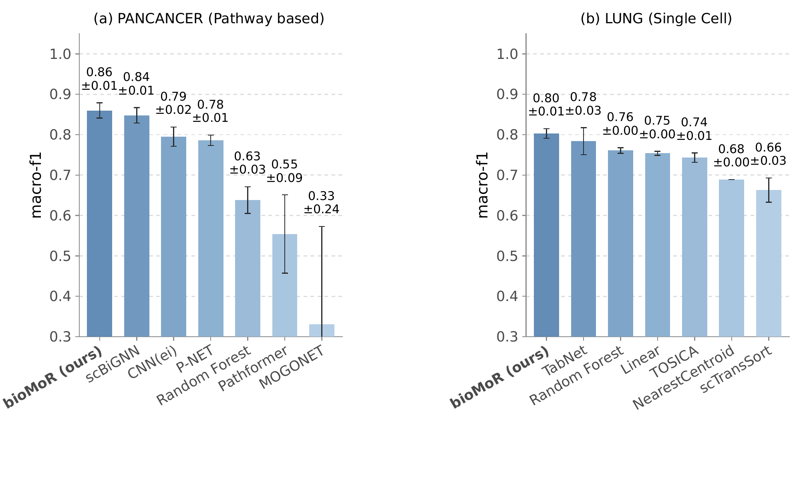
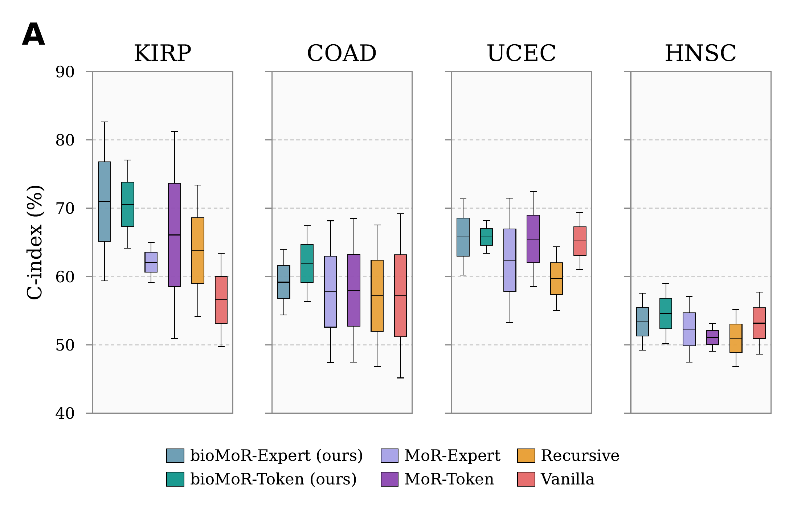
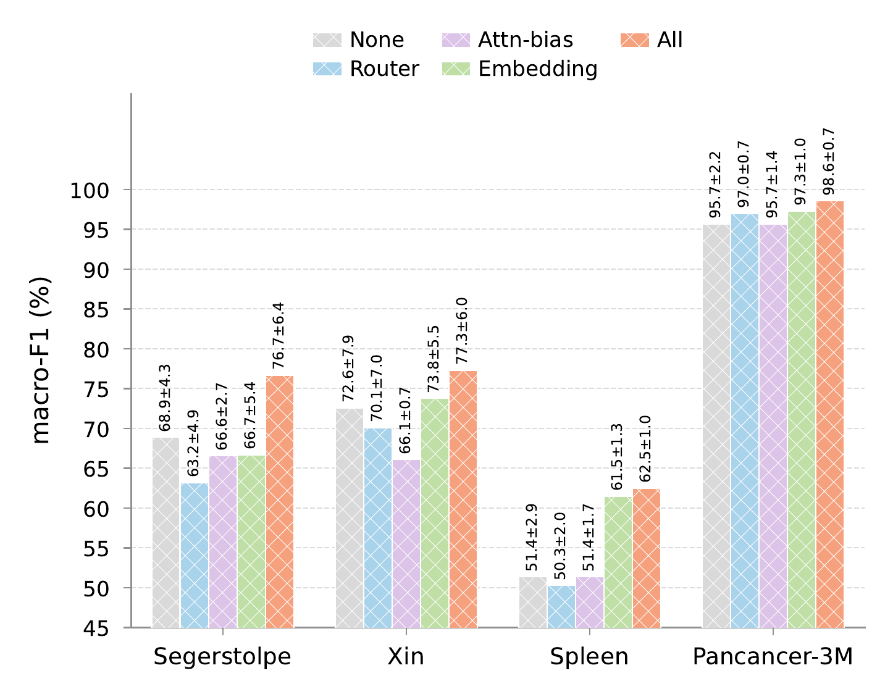
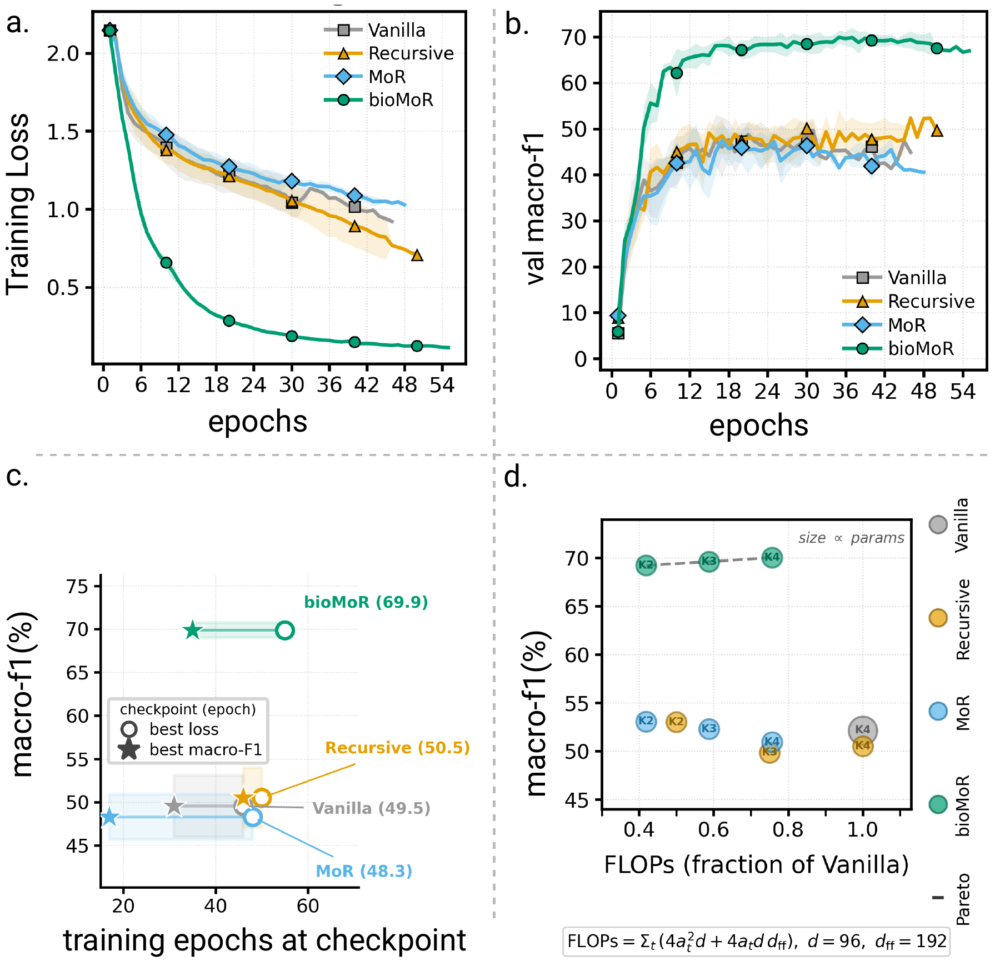
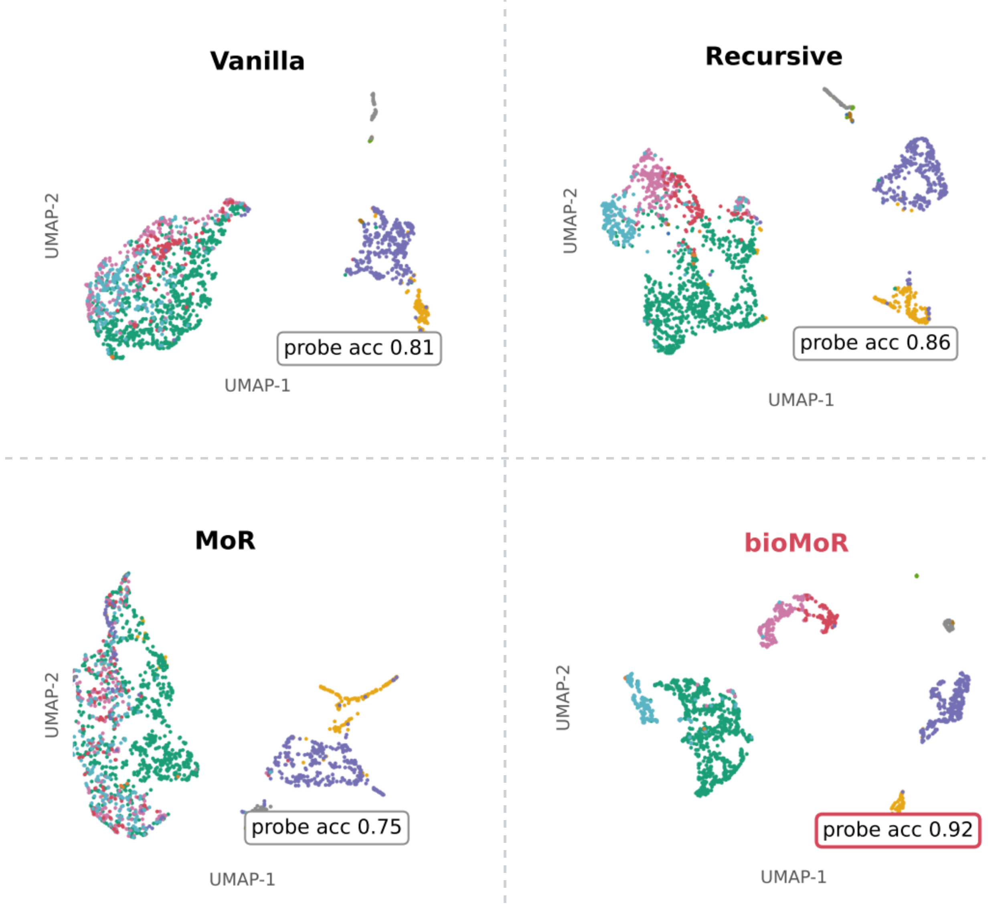
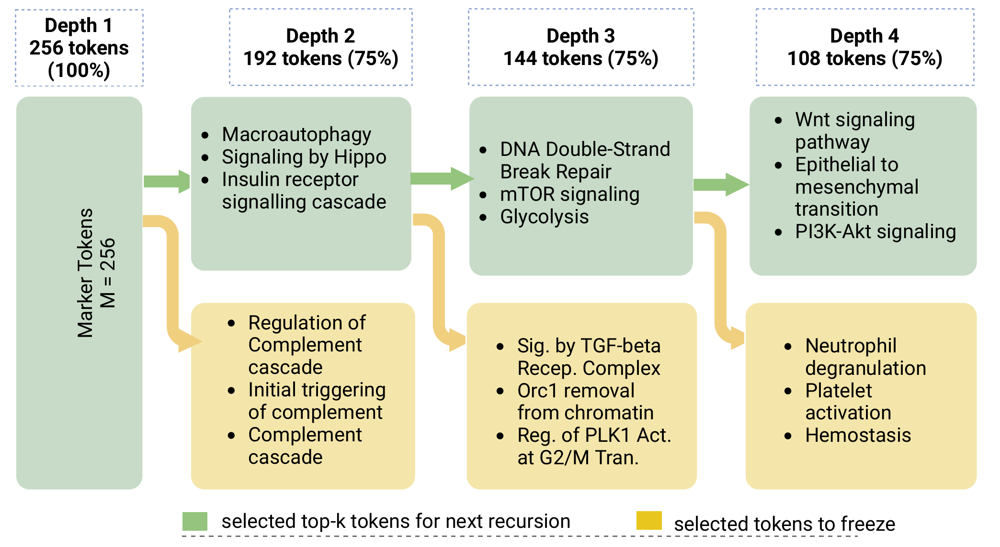

Transformer models for high-dimensional omics analysis process thousands of genes or pathways, although only a subset requires deep computation. Mixture-of-Recursions (MoR) improves efficiency through adaptive token-choice or expert-choice routing. We propose bioMoR, which, to the best of our knowledge, is the first framework to apply MoR to gene- and pathway-level learning. Our contributions include identifying three locations for integrating structured biological knowledge within an MoR backbone: graph-based information sharing refines token embeddings, a structural bias guides self-attention toward biologically related tokens, and a graph-aware router uses neighborhood information to determine each token's recursion depth. These techniques are centered on our insight that additional knowledge of token interaction can effectively help models construct embeddings and select which tokens should be learned more deeply. Across eight benchmarks spanning diverse omics data types and evaluated under a unified five-fold cross-validation protocol, bioMoR improves average macro-F1 by 8.2 percentage points and balanced accuracy by 7.1 percentage points over the strongest biology-agnostic MoR baseline while using 75 percent fewer parameters and up to 58 percent fewer FLOPs than a non-recursive Transformer. The selected marker genes or pathways provide biological interpretability, while their token-specific recursion depths reveal how computation is allocated.
We should perform computation and learning in a selective and structured manner, based on the semantics of omics data. The model should retain biologically meaningful marker gene / pathway tokens and spend more recursive computation on the tokens whose biological neighborhoods are most predictive for the task.
Genomic signal is sparse: a cell type, tumor state, or metastatic phenotype is usually driven by a small set of marker genes, regulatory programs, or pathways. Efficient-attention and adaptive-computation methods route tokens dynamically, but they are biology-agnostic — they do not know whether two genes co-express, share a pathway, or contribute to the same biological process. Biology-aware resources and models supply exactly that structure, but use it for feature engineering, architectural constraints, or post-hoc interpretation rather than to decide which tokens deserve deeper computation. bioMoR connects the two: biological structure becomes a control signal for adaptive computation, not only a static prior.
| Single-cell | Pathway-based | ||||||||||
|---|---|---|---|---|---|---|---|---|---|---|---|
| Model | Routing | Param | Segerstolpe | Lung | T-cell | Muraro | Spleen | BLCA | PAN-2M | PAN-3M | Avg. |
| Macro-F1 | |||||||||||
| Vanilla | — | 300K | 62.5 ± 11.2 | 72.5 ± 2.5 | 52.1 ± 3.5 | 80.2 ± 4.3 | 48.3 ± 3.7 | 40.6 ± 5.8 | 75.6 ± 3.5 | 95.2 ± 1.5 | 65.9 |
| Recursive | — | 75K | 61.4 ± 7.3 | 72.9 ± 2.9 | 50.5 ± 3.5 | 75.8 ± 4.1 | 49.4 ± 3.4 | 40.2 ± 1.1 | 72.3 ± 1.8 | 94.3 ± 1.1 | 64.6 |
| MoR | Expert | 75K | 64.3 ± 11.6 | 72.3 ± 2.7 | 50.9 ± 4.7 | 74.8 ± 4.7 | 53.2 ± 1.3 | 43.7 ± 2.8 | 75.5 ± 3.0 | 94.3 ± 1.3 | 66.1 |
| MoR | Token | 75K | 60.7 ± 5.8 | 73.3 ± 2.4 | 50.4 ± 2.2 | 81.6 ± 2.7 | 51.1 ± 3.1 | 40.6 ± 6.9 | 78.0 ± 4.6 | 95.3 ± 1.6 | 66.4 |
| bioMoR (ours) | Expert | 75K | 72.2 ± 4.5 | 80.0 ± 1.2 | 70.0 ± 1.9 | 83.7 ± 4.9 | 59.7 ± 0.8 | 47.1 ± 7.1 | 85.8 ± 1.5 | 98.0 ± 0.4 | 74.6 |
| bioMoR (ours) | Token | 75K | 75.8 ± 2.8 | 79.7 ± 0.9 | 69.8 ± 1.2 | 81.9 ± 6.8 | 61.0 ± 0.6 | 39.5 ± 5.9 | 86.0 ± 1.9 | 96.4 ± 1.6 | 73.8 |
| Balanced accuracy | |||||||||||
| Vanilla | — | 300K | 71.7 ± 10.3 | 75.2 ± 1.5 | 55.2 ± 5.7 | 79.1 ± 3.3 | 55.3 ± 1.4 | 48.3 ± 2.8 | 74.1 ± 4.0 | 94.9 ± 1.9 | 69.2 |
| Recursive | — | 75K | 69.6 ± 9.1 | 75.3 ± 1.9 | 56.5 ± 4.6 | 77.8 ± 2.4 | 56.9 ± 1.5 | 48.5 ± 2.8 | 74.4 ± 1.6 | 93.6 ± 1.7 | 69.1 |
| MoR | Expert | 75K | 69.2 ± 6.1 | 76.5 ± 1.8 | 56.6 ± 6.1 | 75.5 ± 2.3 | 57.8 ± 2.5 | 49.8 ± 5.0 | 74.6 ± 3.1 | 93.7 ± 3.1 | 69.2 |
| MoR | Token | 75K | 66.4 ± 8.0 | 76.1 ± 2.2 | 56.6 ± 4.1 | 80.6 ± 8.5 | 56.5 ± 1.4 | 46.7 ± 7.8 | 73.5 ± 2.2 | 93.7 ± 4.6 | 68.8 |
| bioMoR (ours) | Expert | 75K | 78.8 ± 4.9 | 80.4 ± 0.6 | 70.4 ± 1.6 | 88.9 ± 4.0 | 64.7 ± 1.6 | 48.7 ± 7.5 | 82.9 ± 3.3 | 95.4 ± 1.3 | 76.3 |
| bioMoR (ours) | Token | 75K | 73.3 ± 7.0 | 82.0 ± 1.5 | 71.3 ± 1.4 | 83.4 ± 3.7 | 64.1 ± 1.1 | 48.3 ± 2.2 | 83.4 ± 2.6 | 96.1 ± 1.9 | 75.2 |
Macro-F1 and balanced accuracy (mean ± SD) from five-fold stratified cross-validation on eight benchmark datasets. All rows use the same folds and operating point; Recursive, MoR, and bioMoR use K = 4. Avg. is the arithmetic mean across the eight displayed datasets; underlining marks the top two results per dataset. The best bioMoR configuration improves average macro-F1 by 8.2 points and balanced accuracy by 7.1 points over the strongest non-bioMoR baseline — at a quarter of the parameters of the vanilla Transformer.

Mean macro-F1 ± SD for bioMoR and dataset-appropriate baselines on (a) pathway-based PANCANCER and (b) single-cell Lung under the matched five-fold evaluation setting. bioMoR obtains the highest mean macro-F1 in both panels: 0.86 ± 0.01 on PANCANCER versus 0.84 ± 0.01 for scBiGNN, and 0.80 ± 0.01 on Lung versus 0.78 ± 0.03 for TabNet. Baselines span Random Forest, Nearest-Centroid, scBiGNN, MOGONET, Pathformer, Geneformer, scGPT, and scTransformer-style models.

Fold-level C-index distributions for the HNSC, UCEC, COAD, and KIRP TCGA cohorts; higher values indicate better concordance between predicted risk and observed survival outcomes. bioMoR-Expert and bioMoR-Token stay competitive with the Vanilla, Recursive, MoR-Expert, and MoR-Token baselines across all four cohorts, showing that biology-guided adaptive recursion transfers beyond classification to a time-to-event endpoint.

Macro-F1 across Spleen, Segerstolpe, Xin, and Pancancer-3M with biological-knowledge injection at the embedding, attention-bias, router, or all three sites; all runs use expert-choice routing with K = 4, and the inset shows average rank across datasets (1 is best). Injecting at all three sites achieves the highest macro-F1. Among single-site variants, embedding injection performs best, followed by router-only and then attention-bias-only — the three sites carry complementary information rather than duplicating one signal.

T-cell with expert-choice routing at K = 4. (a) Training loss and (b) validation macro-F1 over epochs; bioMoR drops the loss fastest and reaches nearly 70% validation macro-F1 while the baselines stall near 40–50%. (c) Test macro-F1 and training epoch at checkpoints selected by lowest validation loss (○) or highest validation macro-F1 (★) — bioMoR wins under both rules (69.9%). (d) Test macro-F1 versus FLOPs for K = 2, 3, 4 with bubble size proportional to parameter count; bioMoR holds 69–70% macro-F1 at every depth while using fewer FLOPs than Vanilla — 58% fewer at K = 2.
| Model | Routing | Normalized FLOPs / macro-F1 | ||
|---|---|---|---|---|
| K = 2 | K = 3 | K = 4 | ||
| Vanilla | — | — | — | 1.00 / 52.1 ± 3.5 |
| Recursive | — | 0.50 / 53.0 ± 2.0 | 0.75 / 49.8 ± 4.4 | 1.00 / 50.5 ± 3.5 |
| MoR | Expert | 0.42 / 50.6 ± 4.9 | 0.59 / 52.3 ± 2.4 | 0.76 / 50.9 ± 4.7 |
| MoR | Token | 0.42 / 50.7 ± 2.2 | 0.52 / 55.8 ± 3.0 | 0.56 / 50.4 ± 2.2 |
| bioMoR | Expert | 0.42 / 69.2 ± 0.7 | 0.59 / 69.6 ± 0.6 | 0.76 / 70.0 ± 1.9 |
| bioMoR | Token | 0.42 / 68.6 ± 1.7 | 0.52 / 68.6 ± 0.9 | 0.56 / 69.8 ± 1.2 |
T-cell macro-F1 across routing policies and recursion depths; each cell reports normalized FLOPs / macro-F1 (mean ± SD). Vanilla, Recursive, and biology-agnostic MoR stay far lower everywhere, while bioMoR stays high under both routing policies and at every depth. The main effect is the biological knowledge; routing policy and depth tune the accuracy–efficiency trade-off around it. The same holds as the marker budget grows from M = 128 to 2048 (mean macro-F1 71.8–73.5) and as model width grows from d = 96 to 352 (mean macro-F1 70.5–72.7).

UMAP visualization of frozen penultimate per-cell embeddings on Segerstolpe for Vanilla, Recursive, MoR, and bioMoR, colored by cell type. Probe accuracy comes from freezing each trained model and fitting a logistic-regression classifier on the training cells. bioMoR forms cleaner cell-type groups and the linear probe performs best on its embeddings (0.92 linear-probe accuracy), indicating that the gains come from the learned representation rather than the final prediction layer alone.

On PAN-2M — localized versus metastatic cancer, one token per named Reactome pathway — the router scores active tokens at each recursion; the top 75% continue (green) and the remaining 25% stop and keep their current representations (yellow). The pathways reaching the greatest depth include Wnt signaling, epithelial-to-mesenchymal transition (EMT), and PI3K–Akt signaling — all independently linked in the literature to colonization of distant organs, invasiveness, and outgrowth of micrometastases. Because tokens carry pathway names, the depth assignment is directly readable. This agreement with published studies is encouraging, but it does not establish a causal relationship.
Status: manuscript under review — not yet accepted or published.
@unpublished{howlader2026biomor,
title = {bioMoR: Biology-Guided Mixture-of-Recursions for Effective Genomic Learning},
author = {Howlader, Koushik and Roy, Tirtho and Islam, Md Tauhidul and Le, Wei},
note = {Manuscript under review},
year = {2026}
}